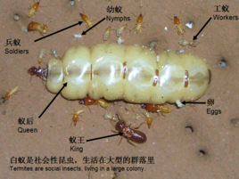
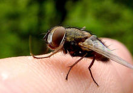
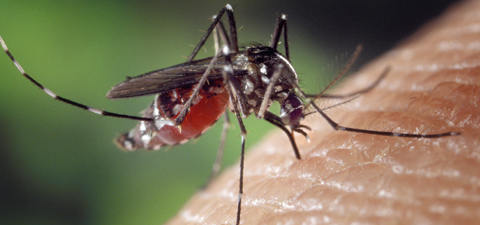
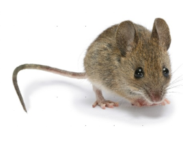
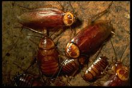

切换导航
首页
公司介绍
业务范围
成功案例
防治知识
联系方式
马上联系我们!
肇庆市房信白蚁防治杀虫有限公司
专注白蚁预防,白蚁灭治,四害消杀等城市卫生害虫防治方服务
优秀团队,专业服务,安全,环保,速效,根治的一站式服务
联系热线:0758-2264268
马上联系我们!
肇庆市房信白蚁防治杀虫有限公司是肇庆市工商行政管理局政府部门审核批准成立的专业公司,技术力量雄厚.....
了解更多
Previous
Next
白蚁科普

白蚁（termite, white ant），亦称虫尉属节肢动物门，昆虫纲，蜚蠊目（原本为等翅目，2007年，等翅目撤销，被归入蜚蠊目），类似蚂蚁营社会性生活，其社会阶级为蚁后、兵蚁、工蚁。白蚁与蚂蚁虽一般同称为蚁（见蚁总科），但白蚁社会体系在分类地位上，白蚁属于较低级的半变态昆虫，蚂蚁则属于较高级的全变态昆虫。根据化石判断，白蚁可能是由古直翅目昆虫发展而来，最早出现于 2 亿年前的二叠纪。人们会误认为白蚁就是蚂蚁的一种，实际上白蚁和蚂蚁是两种不同物种。白蚁体软而小，通常长而圆，白色、淡黄色，赤褐色直至黑褐色。头前口式或下口式，能自由活动。触角念珠状，腹基粗壮，前后翅等长；蚂蚁触角膝状，腹基瘦细，前翅大于后翅。中国古书所称蚁、螘、飞螘、蚍蜉、蠡、螱等，都与蚂蚁混同。宋代开始有白蚁之名，并确定为白蚁的别称。 白蚁分布于热带和亚热带地区 ，以木材或纤维素为食。白蚁是一种多形态、群居性而又有严格分工的昆虫，群体组织一旦遭到破坏，就很难继续生存。全世界已知2000多种。中国除澳白蚁科尚未发现外，其余4科均有，共达300余种。分布范围很广。
白蚁是一种危害性很大的昆虫，如果在家中发现白蚁，一定要请专业人士来清除。
四害科普
“四害”一词人们一点也不陌生，最近，蟑螂也被人们归入“四害”之列，并起名为“新四害”。随着时代的变迁，除了“四害”中的“三害”———苍蝇、蚊子、老鼠稳居“宝座”外，另外那一“害”也在更新换代。
在五六十年代，麻雀曾身居“四害”之一，原因是麻雀吃粮食，全民动员围攻麻雀，后来人们认识到麻雀除了吃粮食也吃害虫，它也就不算一“害”了。尤其到了最近几年，人们的环保意识逐渐增强，虽然麻雀是极普通的鸟，人们也知道不能随便捕杀了.
臭虫也进过“四害”之列，那是在人们生活条件不好的年代，恶劣的生活环境成了臭虫、虱子、跳蚤的“乐园”，在低矮潮湿的平房中臭虫最多。随着人们居住条件和卫生环境的改善，高楼多了，平房在经过装修改造之后，臭虫也无处藏身了，自然不能再为“害”了。
近些年，人们吃的好了、住的好了，又引来了新的害虫———蟑螂，被研究专家称为“富贵虫”，五星级宾馆饭店100％有蟑螂、75％的居民家里发现了蟑螂，现在蟑螂已经无处不在，几乎荣登“四害”之首，除掉这一“害”已经刻不容缓
苍蝇
苍蝇因携带多种病原微生物传播而危害人类，苍蝇的体表多毛，足部抓垫能分泌黏液，喜欢在人或畜的粪尿、痰、呕吐物以及尸体等处爬行觅食，极容易附着大量的病原体，如霍乱弧菌、伤寒杆菌、痢疾杆菌、肝炎杆菌、脊髓灰质炎病菌、甲肝病菌乙肝病菌以及蛔虫卵等；又常在人体、食物、餐饮具上停留，停落时有搓足和刷身的习性，附着在它身上的病原体很快就污染食物和餐饮具．苍蝇吃东西时，先吐出嗉囊液，将食物溶解才能吸入，而且边吃、边吐、边拉；这样也就把原来吃进消化液中的病原体一起吐了出来，污染它吃过的食物，人再去吃这些食物和使用污染的餐饮具就会得病．霍乱、痢疾的流行和细菌性食物中毒与苍蝇传播直接相关，但它也不是一无是处，若没有它，人类将身陷腐臭之地．


蚊子
蚊子的唾液中有一种具有舒张血管和抗凝血作用的物质，它使血液更容易汇流到被叮咬处。被蚊子叮咬后，被叮咬者的皮肤常出现起包和发痒症状。几乎每个人都有被蚊子叮“咬”的不愉快经历，更准确地说应该是被蚊子“刺”到。蚊子无法张口，所以不会在皮肤上咬一口，它其实是用6枝针状的构造刺进人的皮肤，这些短针就是蚊子摄食用口器的中心。这些短针吸人血液的功用就像抽血用的针一样；蚊子还会放出含有抗凝血剂的唾液来防止血液凝结，这样它就能够安稳地饱餐—顿。当蚊子吃饱喝足、飘然离去时，留下的就是一个痒痒的肿包。但是，痒的感觉并不是因为短针刺入或唾液里的化学物质而引起的。我们会觉得痒，是因为体内的免疫系统在这时会释出一种称为组织胺的蛋白质，用以对抗外来物质，而这个免疫反应引发了叮咬部位的过敏反应。当血液流向叮咬处以加速组织复原时，组织胺会造成叮咬处周围组织的肿胀，此种过敏反应的强度因人而异，有的人被蚊子咬后的过敏反应比较严重。
蚊子每次叮咬吸吮大约五千分之一毫升的鲜血，每次饱餐一顿之后，蚊子通常是在出生地2公里范围内活动，不过最远活动距离可达180公里。
老鼠
老鼠是一种啮齿动物，体形有大有小。种类多，有450多种。数量繁多并且繁殖速度很快，生命力很强，几乎什么都吃，在什么地方都能住。会打洞、上树，会爬山、涉水，而且糟蹋粮食、传播疾病，对人类危害极大，所以一直受到人类打击，但它是一个打而不死，击而不破的动物家族，所以“鼠”字头顶着一个“臼”，意为“能耐受捣击”。鼠之所以被尊称为“老”，是因为它像退休养老的人一样，成天吃吃喝喝，不用劳动。
老鼠极易适应人类的生活环境，因此成为主要之有害动物。老鼠常出没于下水道、厕所、厨房等处，在带菌处所与干净处所来回行动，经由鼠脚、体毛及胃携带物来传播病原菌。


蟑螂
蟑螂，泛指属于“蜚蠊目”（学名）的昆虫，其中只有大约数十种会入侵人类家居，还有数种被人类饲养为宠物及作为宠物的粮食外，绝大部分品种只能在野外山涧树林或昆虫博物馆中见到。家居最常见的蟑螂，大的有身长约5.0厘米（1.97英寸）美洲蟑螂（Periplaneta americana）、澳洲蟑螂（Periplaneta australasiae）及短翅的斑蠊（Neostylopyag rhombifolia）；小的有体长约1.5厘米（0.59英寸）的德国蟑螂（Blattella germanica）、日本姬蠊（Blattella bisignata）及亚洲蟑螂（ Blattella asahinai），热带地区的蟑螂一般比较巨大。家居蟑螂普遍夜行及畏光，野外蟑螂因品种而异，趋光性有正亦有负。
体扁平，黑褐色，通常中等大小。头小，能活动。触角长丝状，复眼发达。翅平，前翅为革质后翅为膜质，前后翅基本等大，覆盖于腹部背面；有的种类无翅。不善飞，能疾走。不完全变态。产卵于卵鞘内，约有6000种，主要分布在热带、亚热带地区，生活在野外或者室内。